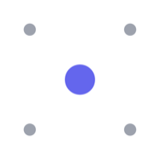
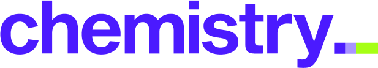
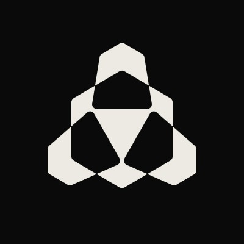
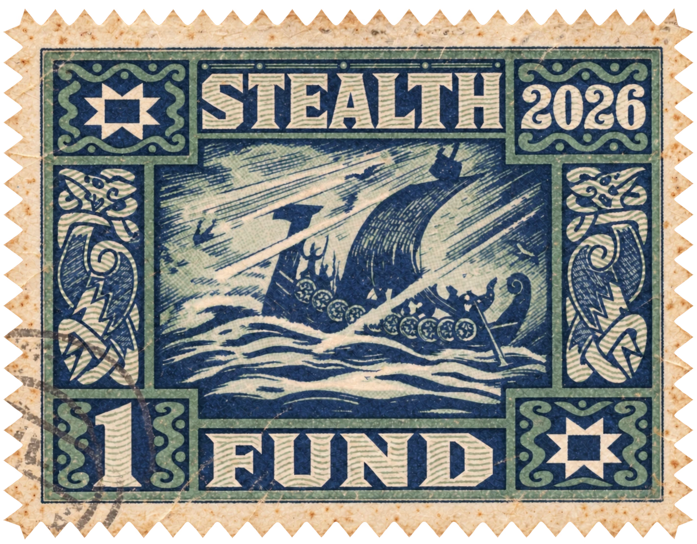

We are Korea’s AI ecosystem.
Startups founded by our fellows are backed by A16Z, Arielle Zuckerberg, Y Combinator, Samsung Ventures, and SoftBank.
Fellowship
We are an AI researchers & founders fellowship based in Seoul from academia and industry. We work on research, open-source projects, and real-world applications to build the next leading AI startups.
Raised by our fellows
Our fellows have raised over $70M in funding from leading venture funds and institutional investors.
Milestones
We’re the launchpad for
- Korean founders going global.
- Global AI companies entering Korea.
- Dentronic secures $1M, joins SPC fellowship to scale dental AI robotsFunding
- Google DeepMind Gemini 3 Hackathon SeoulHackathon
- Samsung Ventures leads AIM Intelligence’s Series‑A to scale AI security in KoreaFunding
- OpenAI Startup Meetup SeoulMeetup
- Korea Launch for Manus AI, Genspark, and ReplitLaunch
- Google DeepMind Gemini 4 Hackathon SeoulHackathon
$1M$33M
ARR in 4 months

raises $15M
Seed led by a16z

Team
- High school & college dropout,Founded Paradox Computer(acq. by Yeo Holdings). Sukone Hong General Partner
- Dr. Julia Lee General Partner
- Daniel Chang Stealth (Venture) Partner
- Kunhak Lee Operating Partner

raises $7M
Seed round, backed by
News (03)
-
Sukone Hong, featured in Frontier List’s “Great SF event hosts”, alongside Dave Fontenot (HF0), Ben Lang (Cursor), and Vivian Shen (Y Combinator).
-
Daniel Chang, featured in Frontier List’s “Insightful people in AI data and post-training” alongside founders of Flapping Airplanes, Ricursive, and Applied Compute.
-
Portfolio News: Parasma, featured in Nature, The Times, and The Economist.
© 2026 AttentionX. All rights reserved.
AttentionX™ is a trademark of its respective owner.
